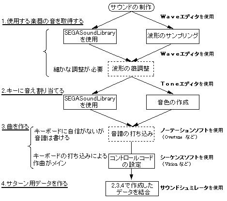

★SGL User's Manual
★SOUND TUTORIAL
★SGL User's Manual
★SOUND TUTORIAL
▲戻る｜進む▼
SOUND TUTORIAL
2. 曲を作る
本章ではセガサウンドツールを使用した曲の制作手順と、ツール使用時の注意事項を説明します。
ここでは、効果音の作成については触れませんが、効果音も曲と全く同じ手順で作成できます。
用語が多く最初は戸惑うかもしれませんが、基本的な編集方法のみ掲載していますのでとりあえず色々試してみてください。
2-1. サウンド制作の流れ
- セガサウンドツールを使ったセガサターン用サウンド制作の流れは、下図のようになります。
この流れでは、ＭＩＤＩ音源なしでもサウンドの制作は可能です。
図2-1 サウンド制作の流れ

- ※SEGA Sound Libraryは、Invision社の製品です。
- ※Overtuneは、OPCDE SYSTEM INC社の製品です。
- ※Toneエディタはセガ提供ツールです。
- ※Waveエディタは市販ツールです。
曲作りのツールについて
-
- 曲を作成するソフトウェア（シーケンサなど）はセガサウンドツールには用意されていません。
市販のソフトを使用してください。
- １の作業は、市販ツールでも可能です。自分に使いやすい物を選択してください。
- ノーテーションソフトのみ使用する場合には、ＭＩＤＩイベント（最低限、コントローラー、プログラム）が編集可能な物を使用してください。
▲戻る｜進む▼
★SGL User's Manual
★SOUND TUTORIAL
Copyright SEGA ENTERPRISES, LTD., 1997